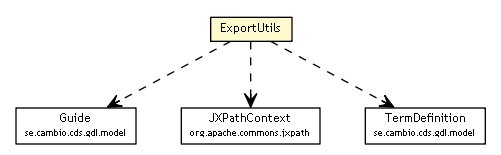

se.cambio.cds.gdl.editor.view.util
Class ExportUtils

java.lang.Object
 se.cambio.cds.gdl.editor.view.util.ExportUtils
se.cambio.cds.gdl.editor.view.util.ExportUtils
public class ExportUtils
- extends Object
| Methods inherited from class java.lang.Object |
clone, equals, finalize, getClass, hashCode, notify, notifyAll, toString, wait, wait, wait |
ExportUtils
public ExportUtils()
exportToHTML
public static void exportToHTML(Window owner,
Guide guide,
String lang)
convertToHTML
public static String convertToHTML(Guide guide,
String lang)
getValue
public static String getValue(org.apache.commons.jxpath.JXPathContext c,
String path)
Copyright © 2013 Cambio. All Rights Reserved.